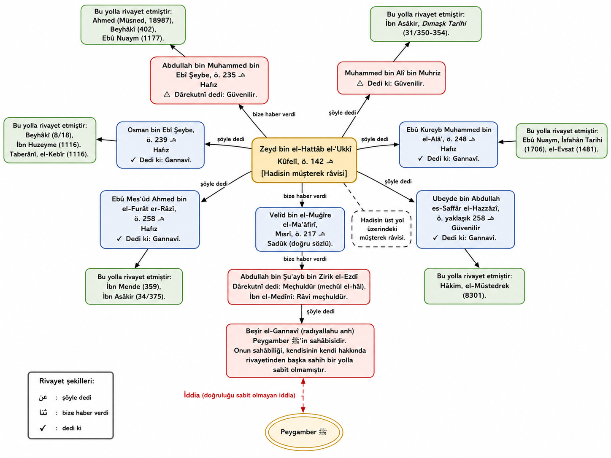

Araştırma Fihristi
1. İddianın Kaynağı ve Tarihî Bağlamı
Sultan Mehmed Fâtih'e, Allah ona rahmet etsin, yöneltilen itham şudur: 855 H. / 1451 M. yılında tahta çıktığında —bazı rivayetlere göre henüz bebek veya küçük bir çocuk olan— kardeşi Ahmed Çelebi'yi öldürmüş, ve ona sonradan "Kanunnâme" (kardeş katli kanunu) olarak bilinen ve metni şöyle nakledilen kanun isnad edilmiştir:
«Ve her kimesneye evlâdımdan saltanat müyesser ola, karındaşların nizâm-ı âlem içün katl etmek münâsibdir. Ekser ulemâ dahi tecviz etmişlerdir. Anınla âmil olalar.» Günümüz Türkçesiyle: "Evlatlarımdan hangisine saltanat nasip olursa, dünya düzeni için kardeşlerini öldürmesi uygundur. Âlimlerin çoğu bunu caiz görmüştür; bununla amel edilsin."
Bu metin ve tartışması, Prof. Dr. Ahmed Akgündüz ve Prof. Dr. Said Öztürk'ün Bilinmeyen Osmanlı adlı eserinde yer almaktadır.
2. Varsayımlar ve Fıkhî Temellendirme
Bir Müslümanı delilsiz itham etmek ne şer'an ne de hukuken caizdir; bu tek başına, sahih bir delille ispatlanmadıkça Fâtih'in kardeşini öldürdüğü iddiasını reddetmeye yeterlidir.
Bu kanunun Fâtih'e isnadının doğru olduğunu varsaysak bile, onu kendisi icat etmemiş, âlimlerin fetvalarına dayanmıştır; buna dayanak, Buhârî'nin et-Târîhu'l-Kebîr'inde ve Müslim'de yer alan Arfece hadisidir; bu hadiste Peygamber ﷺ şöyle buyurmuştur:
"Muhakkak ki bir takım fitneler ve olaylar olacaktır. Bu ümmet bir arada iken kim onun işini ayırmak (bölmek) isterse, kim olursa olsun onu kılıçla vurun."
Bu, fitne çıkarıp Müslüman topluluğunu bölmek isteyen kişinin —bir evlat bile olsa— hükmünün ölüm olduğuna dair açık ve güçlü bir nastır; çünkü "kim olursa olsun" öldürülmezse Müslümanlar birbirini öldürür ve devlet çökerdi. Bir organı kesmek bazen bedenin geri kalanının selameti içindir; burada söylenen, hadisin nassıyla ve âlimlerin sözleriyle çelişmemektedir. Doğrusunu en iyi Allah bilir.
3. Sened İncelemesi
Bu rivayetin herhangi bir senedi yoktur. Dolayısıyla bu hikâyenin ne sahih ne de zayıf bir senetle aslı vardır; ona isnad yapmak veya onunla delil getirmek caiz değildir.
Yazarların kendilerinin de kabul ettiği gibi, bu kanunları içeren metnin asıl elyazması ne Osmanlı tarihçileri ne de karşı (düşman) taraf nezdinde bulunamamıştır. İlginç olan şu ki, araştırmacılar arasında şu anda dolaşımda olan en eski nüshalar, Osmanlı Devleti'yle düşmanlığı ve savaşları bilinen ülkelerde (Avusturya, Fransa ve Rusya) bulunmakta olup, çoğunlukla on yedinci ve on sekizinci yüzyıllara —yani Fâtih'in vefatından çok uzun bir süre sonrasına— tarihlenmektedir.
Hatta tanınmış Osmanlı hukukçusu Himmet Berki dahi, bu kırk yedi kanunun Sultan Mehmed Fâtih'e isnadını reddetmiş; bunların, Osmanlı Devleti'nin düşmanı olan Batılılar tarafından uydurulmuş nüshalar olduğunu ileri sürmüştür.
4. On Standart ve Ölçütün Uygulanması
Aşağıdaki iddia, "Standartlar ve Ölçütler" bölümünde benimsenen on seviyeye göre değerlendirilir ve her seviyenin sonucu kaydedilir.
Sahîh-i Buhârî (Ebû Zer el-Herevî Rivayeti)
Sonuç: Uygulanmaz — Buhârî, Fâtih döneminden yüzyıllarca öncedir
Mâlik'in Muvatta'ı (el-Ka'nebî Rivayeti) / Büyük ve Küçük Tarih
Sonuç: Uygulanmaz — İmam Mâlik, Fâtih döneminden yüzyıllarca öncedir
Kütüb-i Sitte'nin Geri Kalanı ve Müsned
Sonuç: Uygulanmaz — Kütüb-i Sitte'nin sahipleri ve hadis derleyicilerinin tümü Fâtih döneminden öncedir
Tarihçiler
Sonuç: Uygulanmaz — Taberî ve İbn Kesîr gibi tanınmış tarihçiler Fâtih döneminden öncedir
Âdil Çağdaşların Tanıklığı
Sonuç: Adalet, ilim ve insafıyla tanınan tek bir çağdaş bile, Fâtih'in kardeşini öldürdüğüne veya öldürmeye izin veren bir kanun çıkardığına tanıklık etmemiştir.
İlmî Sükût Delili
Sonuç: Fâtih'in çağdaşı olan, Celâleddin es-Süyûtî ve İbn Hacer el-Heytemî gibi dünyanın doğusundaki ve batısındaki hiçbir âlim, bu olaydan veya bu kanundan —ne inkâr ne kabul, ne de tartışma veya fetva yoluyla bile olsun— bahsetmemiştir.
Muhaliflerin Rivayeti Delil Olarak Kullanmaması
Sonuç: Osmanlılarla ilişkileri gergin olan Macaristan, Venedik, Papalık Devleti ve Memlükler gibi devletler, doğru olsaydı bundan açıkça fayda sağlayacak olmalarına rağmen bu iddiayı siyasi olarak hiç kullanmamışlardır. Belirtmek gerekir ki İmam es-Süyûtî fetvada bağımsızdı, sultanın saray âlimlerinden değildi ve Memlük Devleti'nin gölgesinde yaşadı; buna rağmen bundan hiç bahsetmemiştir.
Maddî ve Arkeolojik Deliller
Sonuç: Bu kanunları içeren metnin asıl elyazması bulunamamıştır; dolaşımdaki en eski nüshalar on yedinci ve on sekizinci yüzyıllara, yani Fâtih'in vefatından uzun süre sonrasına tarihlenmekte olup Osmanlılara düşman devletlerde bulunmaktadır (ayrıntısı yukarıdaki sened inceleme bölümündedir).
Sanığın Nebevî Tezkiyesi
Sonuç: "Onun emiri ne güzel emirdir" hadisinin sahih olduğu varsayılırsa (ki bazı âlimler bunu sahihlemiş ve ona dayanmıştır), bu, katil iddiasına aykırı bir delildir ve onu daha da zayıflatır. Böylece karşımızda, sıhhati tartışmalı bir hadis, aslı hiç olmayan bir iddiaya karşı durmaktadır. (Bu hadisin senedinin tam incelemesi, ikinci iddia sayfasında yer almaktadır: İstanbul'un Fethine Dair Nebevî Müjdenin Gerçekleşip Gerçekleşmediği.)
Düşmanlığı Bilinen Kişilerin Rivayetleri
Sonuç: İddianın kaynağı, Osmanlılara düşmanlığı bilinen Bizanslı tarihçilerdir: Dukas, İstanbul'un düşüşüne şahit olan ve açıkça düşmanca bir bakış açısıyla yazan Nicolò Barbaro, ve Laonikos Chalkokondyles.
5. Buhârî Senedi ile Kanun Senedini Kıyaslama Şüphesine Cevap
Bilinmeyen Osmanlı adlı eserin yazarları, Sahîh-i Buhârî nüshaları arasındaki —Allah'ın kitabından sonra en sahih kitap olmasına rağmen— farkların, onun sıhhatine itiraz sebebi olamayacağını ileri sürerek bunu Fâtih'in Kanunnâme'siyle kıyaslamışlardır. Bu kıyas reddedilmiştir:
Buhârî'nin sahih nüshalarında herhangi bir ihtilaf yoktur; bu, Buhârî'nin en sağlam ve en güvenilir öğrencisi el-Ferebrî'den; onun da üç hocası —el-Küşmihenî, es-Serahsî ve el-Müstemlî— aracılığıyla Ebû Zer el-Herevî'nin rivayetidir ve bu rivayet günümüzde Türkiye'de yazılı ve sabit elyazması halinde mevcuttur. Dolayısıyla sened şüphesiz muttasıldır (bağlantılıdır).
Fâtih'in kanununun senedi ise ne işitme, ne yazı, ne de âdil çağdaşların bir onayıyla bağlantılıdır. Buradaki kıyas büyük bir farkla yapılmaktadır: bir tarafta kesin olarak var olan sabit bir elyazması, diğer tarafta ise asıl elyazmasının tamamen yokluğu.
6. Bişr el-Ğanevî Senedinin İncelenmesi
Bu inceleme, İstanbul'un fatihinin nebevî tezkiyesinde geçen "Onun emiri ne güzel emirdir" hadisiyle ilgilidir (yukarıdaki dokuzuncu standart); bu rivayetin sahabi "Bişr el-Ğanevî"ye isnadında bir sorun bulunmaktadır (Abdullah veya Übeydullah bin Bişr el-Ğanevî de denir; Mısırlıdır, İbn Hibbân onu sahabe tabakasında zikretmiş, Ebû Hâtim de onun hakkında "Mısırlıdır, sohbeti vardır" demiştir).

Birinci sorun: rivayet, bir Kûfeliden bir Mısırlıya, ondan da bir Kûfeliye giden bir yoldan gelmiştir; bu tek başına tevsik rütbesini ispatlamaya yetmez, çünkü İbn Hibbân'ın tevsikte gevşek davrandığı bilinmektedir.
İkinci sorun: İbnü's-Salâh, en-Nevevî ve Hâfız Zeynüddin el-Irâkî —Allah onlara rahmet etsin— hadis usulüne giriş eserlerinde, bir ravinin sahabi olduğunun dört yoldan birinden bilinebileceğini açıklamışlardır: mütevatir olarak, mütevatir derecesine ulaşmayan bir yaygınlıkla, adaleti sabit olduktan sonra bir sahabinin ondan sahabi olduğuna dair rivayetiyle, ya da kendisinin kendisi hakkında sahabi olduğunu bildirmesiyle.
Bişr el-Ğanevî'nin sahabiliği ilk üç yoldan hiçbiriyle ispatlanmamıştır; geriye yalnızca dördüncü yol kalmaktadır. Adaletinin sabit olduğuna dair hiçbir karine bulunmadığından, kendisi hakkında sahabi olduğunu veya Peygamber'den ﷺ işittiğini söylemesine dayanmak sahih değildir.
Bu incelemenin özeti: Bu hadis bu yoldan sabit olmaz; benzeri, sahabiler arasında veya bu müjdeyi elde etmek için İstanbul'u fethetmeye çalışan sonraki nesiller arasında da dolaşmamıştır.
Sonuç ve Nihaî Hüküm
Bu meselede sözün özü şudur: bir katil ithamı, salt iddiayla sabit olmaz; delil, beyyine veya âdil şahitlerin tanıklığı gerekir. Bu davada ne sahih bir delil, ne beyyine, ne de âdil şahitler vardır; devrinin âlimlerinden de buna dair bir inkâr nakledilmemiştir. Hatta düşmanlarının bile onu kardeşlerini öldürmekle itham ettiği sabit değildir; oysa böyle bir ithamın aslı olsaydı, onlar için şöhretini karalamak ve onu itham etmek için kıymetli bir fırsat olurdu.
Kardeş katli kanunu olarak bilinen şeye gelince, metnini ispatlayan sahih bir elyazması yoktur; hatta isnad edildiği asıl belge dahi mevcut değildir. Farklı bölgelerdeki çağdaş âlimlerinin de bunu inkâr ettiği veya buna itiraz ettiği bilinmemektedir; tek bir Rabbânî âlimin bile bunu açıkça inkâr edip zulüm veya haksızlık saydığı nakledilmemiştir.
Son olarak, tartışma amacıyla bile olsa bu sözü söylediğini veya bu kanunu onayladığını kabul etsek dahi, Müslümanların birliğini tehdit eden ve onu bölmeye çalışan kişi hakkındaki şer'î hüküm İslam fıkhında bilinen bir husustur ve âlimlerin çoğunluğu tarafından da tespit edilmiştir. Âlimler bu anlamı, "bir organı kesmek, bütün bedeni kaybetmekten evladır" sözleriyle ifade etmişlerdir.